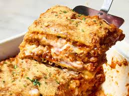

Classic Lasagna

Description
This classic lasagna is a hearty and comforting dish made with layers of rich meat sauce, creamy cheese, and tender pasta sheets.
It is a family favorite that's perfect for both weeknight dinners and special occasions.
Although it takes a little extra time to assemble, the result is well worth the effort. Every bite is packed with flavor and delicious melted cheese.
Ingredients
- 12 lasagna noodles
- 1 lb (450g) ground beef
- 1 onion, diced
- 2 cloves garlic, minced
- 24 oz (680g) marinara sauce
- 15 oz (425g) ricotta cheese
- 2 cups shredded mozzarella cheese
- 1/2 cup grated Parmesan cheese
- 1 egg
- Salt and pepper to taste
Steps
- Preheat the oven to 375°F (190°C).
- Cook the lasagna noodles according to package instructions and set aside.
- Brown the ground beef with the onion in a skillet. Add garlic and cook for 1 minute.
- Stir in the marinara sauce and simmer for 10 minutes.
- In a bowl, combine ricotta cheese, egg, Parmesan cheese, salt, and pepper.
- Spread a thin layer of meat sauce in a baking dish.
- Layer noodles, ricotta mixture, meat sauce, and mozzarella cheese. Repeat until all ingredients are used.
- Top with the remaining mozzarella cheese.
- Bake for 35-40 minutes until bubbly and golden.
- Let rest for 10 minutes before slicing and serving.
Home